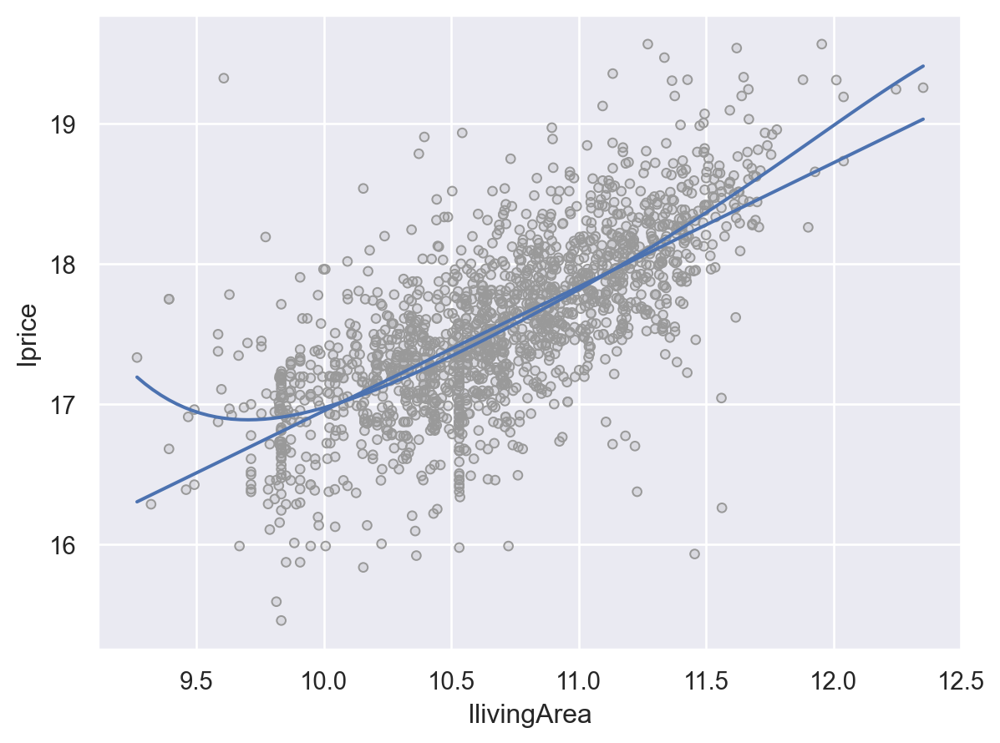
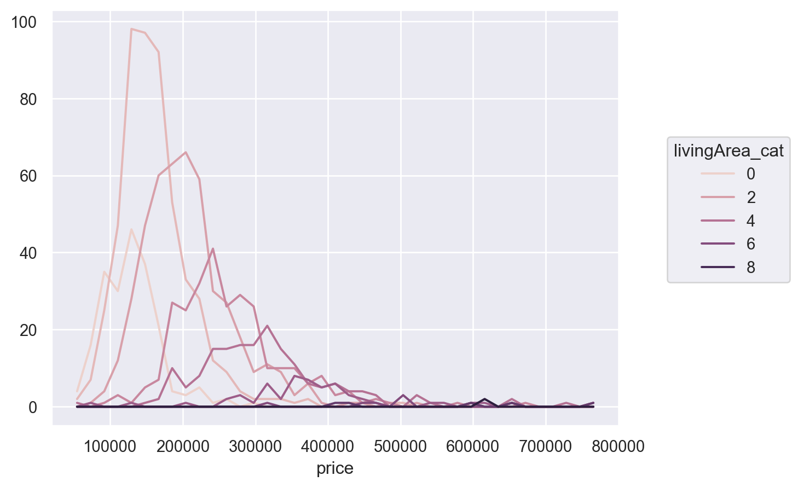

price lotSize age landValue livingArea pctCollege bedrooms
0 132500 0.09 42 50000 906 35 2 \
1 181115 0.92 0 22300 1953 51 3
2 109000 0.19 133 7300 1944 51 4
3 155000 0.41 13 18700 1944 51 3
... ... ... ... ... ... ... ...
1724 285000 0.94 37 36200 2564 61 4
1725 194900 0.39 9 20400 1099 51 2
1726 125000 0.24 48 16800 1225 51 3
1727 111300 0.59 86 26000 1959 51 3
fireplaces bathrooms rooms heating fuel
0 1 1.00 5 electric electric \
1 0 2.50 6 hot water/steam gas
2 1 1.00 8 hot water/steam gas
3 1 1.50 5 hot air gas
... ... ... ... ... ...
1724 1 2.50 11 hot water/steam gas
1725 0 1.00 3 hot air gas
1726 1 1.00 7 hot air gas
1727 0 1.00 6 hot air gas
sewer waterfront newConstruction centralAir
0 septic No No No
1 septic No No No
2 public/commercial No No No
3 septic No No No
... ... ... ... ...
1724 public/commercial No No No
1725 public/commercial No No No
1726 public/commercial No No No
1727 septic No No No
[1728 rows x 16 columns]Saratoga House Price Prediction
R for Data Science by Wickham & Grolemund
bedrooms
3 822
4 487
2 348
5 53
6 8
1 7
7 3
Name: count, dtype: int64
| Dep. Variable: | lprice | R-squared: | 0.569 |
| Model: | OLS | Adj. R-squared: | 0.566 |
| Method: | Least Squares | F-statistic: | 171.7 |
| Date: | Fri, 09 Jun 2023 | Prob (F-statistic): | 2.18e-297 |
| Time: | 13:59:52 | Log-Likelihood: | -872.23 |
| No. Observations: | 1705 | AIC: | 1772. |
| Df Residuals: | 1691 | BIC: | 1849. |
| Df Model: | 13 | ||
| Covariance Type: | nonrobust |
| coef | std err | t | P>|t| | [0.025 | 0.975] | |
| Intercept | 16.1549 | 0.128 | 126.623 | 0.000 | 15.905 | 16.405 |
| heating[T.hot air] | 0.0306 | 0.085 | 0.358 | 0.720 | -0.137 | 0.198 |
| heating[T.hot water/steam] | -0.0143 | 0.089 | -0.162 | 0.871 | -0.188 | 0.159 |
| fuel[T.gas] | 0.0846 | 0.084 | 1.008 | 0.314 | -0.080 | 0.249 |
| fuel[T.oil] | 0.0296 | 0.089 | 0.331 | 0.740 | -0.146 | 0.205 |
| sewer[T.public/commercial] | -0.0104 | 0.118 | -0.088 | 0.930 | -0.242 | 0.221 |
| sewer[T.septic] | -0.0298 | 0.119 | -0.250 | 0.802 | -0.263 | 0.203 |
| waterfront[T.Yes] | 0.8187 | 0.114 | 7.198 | 0.000 | 0.596 | 1.042 |
| centralAir[T.Yes] | 0.1134 | 0.024 | 4.776 | 0.000 | 0.067 | 0.160 |
| newConstruction[T.Yes] | -0.1124 | 0.049 | -2.298 | 0.022 | -0.208 | -0.016 |
| livingArea | 0.0005 | 2.85e-05 | 18.901 | 0.000 | 0.000 | 0.001 |
| bedrooms | 0.0037 | 0.017 | 0.213 | 0.831 | -0.030 | 0.038 |
| fireplaces | 0.0307 | 0.021 | 1.480 | 0.139 | -0.010 | 0.071 |
| bathrooms | 0.1719 | 0.023 | 7.591 | 0.000 | 0.127 | 0.216 |
| Omnibus: | 80.598 | Durbin-Watson: | 1.393 |
| Prob(Omnibus): | 0.000 | Jarque-Bera (JB): | 273.784 |
| Skew: | -0.002 | Prob(JB): | 3.54e-60 |
| Kurtosis: | 4.963 | Cond. No. | 3.91e+04 |
Notes:
[1] Standard Errors assume that the covariance matrix of the errors is correctly specified.
[2] The condition number is large, 3.91e+04. This might indicate that there are
strong multicollinearity or other numerical problems.
| Dep. Variable: | lprice | R-squared: | 0.567 |
| Model: | OLS | Adj. R-squared: | 0.565 |
| Method: | Least Squares | F-statistic: | 317.5 |
| Date: | Fri, 09 Jun 2023 | Prob (F-statistic): | 4.97e-303 |
| Time: | 13:59:52 | Log-Likelihood: | -875.87 |
| No. Observations: | 1705 | AIC: | 1768. |
| Df Residuals: | 1697 | BIC: | 1811. |
| Df Model: | 7 | ||
| Covariance Type: | nonrobust |
| coef | std err | t | P>|t| | [0.025 | 0.975] | |
| Intercept | 17.0840 | 0.049 | 350.086 | 0.000 | 16.988 | 17.180 |
| C(bedrooms)[T.3] | 0.1030 | 0.028 | 3.707 | 0.000 | 0.048 | 0.157 |
| C(bedrooms)[T.4] | 0.0650 | 0.037 | 1.755 | 0.079 | -0.008 | 0.138 |
| C(bedrooms)[T.5] | -0.0419 | 0.067 | -0.630 | 0.529 | -0.172 | 0.089 |
| waterfront[T.Yes] | 0.8125 | 0.113 | 7.177 | 0.000 | 0.590 | 1.035 |
| centralAir[T.Yes] | 0.1462 | 0.022 | 6.645 | 0.000 | 0.103 | 0.189 |
| standardize(livingArea) | 0.3279 | 0.017 | 19.617 | 0.000 | 0.295 | 0.361 |
| bathrooms | 0.1844 | 0.022 | 8.302 | 0.000 | 0.141 | 0.228 |
| Omnibus: | 85.397 | Durbin-Watson: | 1.404 |
| Prob(Omnibus): | 0.000 | Jarque-Bera (JB): | 303.812 |
| Skew: | 0.002 | Prob(JB): | 1.07e-66 |
| Kurtosis: | 5.068 | Cond. No. | 27.0 |
Notes:
[1] Standard Errors assume that the covariance matrix of the errors is correctly specified.


0.5136839715269359



<Axes: title={'center': 'Lprice'}, xlabel='livingArea_cat'><Axes: title={'center': 'price'}, xlabel='livingArea_cat'>
price lotSize age landValue livingArea pctCollege bedrooms
0 132500 0.09 42 50000 906 35 2 \
1 181115 0.92 0 22300 1953 51 3
2 109000 0.19 133 7300 1944 51 4
3 155000 0.41 13 18700 1944 51 3
... ... ... ... ... ... ... ...
1724 285000 0.94 37 36200 2564 61 4
1725 194900 0.39 9 20400 1099 51 2
1726 125000 0.24 48 16800 1225 51 3
1727 111300 0.59 86 26000 1959 51 3
fireplaces bathrooms rooms ... fuel sewer
0 1 1.00 5 ... electric septic \
1 0 2.50 6 ... gas septic
2 1 1.00 8 ... gas public/commercial
3 1 1.50 5 ... gas septic
... ... ... ... ... ... ...
1724 1 2.50 11 ... gas public/commercial
1725 0 1.00 3 ... gas public/commercial
1726 1 1.00 7 ... gas public/commercial
1727 0 1.00 6 ... gas septic
waterfront newConstruction centralAir lprice livingArea_cat lresid2
0 No No No 17.02 0 0.20 \
1 No No No 17.47 2 -0.29
2 No No No 16.73 2 -0.70
3 No No No 17.24 2 -0.32
... ... ... ... ... ... ...
1724 No No No 18.12 4 0.07
1725 No No No 17.57 1 0.66
1726 No No No 16.93 1 -0.15
1727 No No No 16.76 2 -0.72
resid2 Lprice
0 1.15 11.79
1 0.82 12.11
2 0.61 11.60
3 0.80 11.95
... ... ...
1724 1.05 12.56
1725 1.58 12.18
1726 0.90 11.74
1727 0.61 11.62
[1705 rows x 21 columns]0.5136839715269359 0.53264108430965470.04348418819547295 0.24811396548787668Intercept 108043.50
livingArea 31.69
dtype: float64Intercept 32526.76
livingArea 107.98
dtype: float64 price lotSize age landValue livingArea pctCollege bedrooms
0 132500 0.09 42 50000 906 35 2 \
1 181115 0.92 0 22300 1953 51 3
2 109000 0.19 133 7300 1944 51 4
3 155000 0.41 13 18700 1944 51 3
... ... ... ... ... ... ... ...
1724 285000 0.94 37 36200 2564 61 4
1725 194900 0.39 9 20400 1099 51 2
1726 125000 0.24 48 16800 1225 51 3
1727 111300 0.59 86 26000 1959 51 3
fireplaces bathrooms rooms ... newConstruction centralAir lprice
0 1 1.00 5 ... No No 17.02 \
1 0 2.50 6 ... No No 17.47
2 1 1.00 8 ... No No 16.73
3 1 1.50 5 ... No No 17.24
... ... ... ... ... ... ... ...
1724 1 2.50 11 ... No No 18.12
1725 0 1.00 3 ... No No 17.57
1726 1 1.00 7 ... No No 16.93
1727 0 1.00 6 ... No No 16.76
livingArea_cat lresid2 resid2 Lprice llivingArea resid1 bathroom2
0 0 0.20 1.15 11.79 9.82 17995.50 1
1 2 -0.29 0.82 12.11 10.93 -54259.55 2.5
2 2 -0.70 0.61 11.60 10.92 -125335.55 1
3 2 -0.32 0.80 11.95 10.92 -79335.55 1.5
... ... ... ... ... ... ... ...
1724 4 0.07 1.05 12.56 11.32 -20910.94 2.5
1725 1 0.66 1.58 12.18 10.10 58114.78 1
1726 1 -0.15 0.90 11.74 10.26 -26331.19 1
1727 2 -0.72 0.61 11.62 10.94 -124767.21 1
[1704 rows x 24 columns]